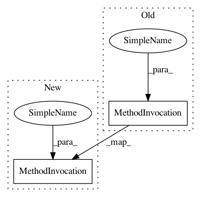

1d62b0c431c821671ef8f251d14cc8ae79b93c76,examples/applications/plot_over_sampling_benchmark_lfw.py,,,#,42
Before Change
plt.plot(mean_fpr, mean_tpr, linestyle="--",
label="{} (area = %0.2f)".format(name) % mean_auc, lw=LW)
plt.xlim([-0.05, 1.05])
plt.ylim([-0.05, 1.05])
plt.xlabel("False Positive Rate")
plt.ylabel("True Positive Rate")
plt.title("Receiver operating characteristic example")
After Change
ax.get_yaxis().tick_left()
ax.spines["left"].set_position(("outward", 10))
ax.spines["bottom"].set_position(("outward", 10))
plt.xlim([0, 1])
plt.ylim([0, 1])
plt.xlabel("False Positive Rate")
plt.ylabel("True Positive Rate")
plt.title("Receiver operating characteristic example")
In pattern: SUPERPATTERN
Frequency: 4
Non-data size: 2
Instances
Project Name: scikit-learn-contrib/imbalanced-learn
Commit Name: 1d62b0c431c821671ef8f251d14cc8ae79b93c76
Time: 2017-03-30
Author: g.lemaitre58@gmail.com
File Name: examples/applications/plot_over_sampling_benchmark_lfw.py
Class Name:
Method Name:
Project Name: daavoo/pyntcloud
Commit Name: 7e7af258ed569a96894941059184e5271853e070
Time: 2018-04-09
Author: daviddelaiglesiacastro@gmail.com
File Name: pyntcloud/geometry/coord_systems.py
Class Name:
Method Name: cartesian_to_spherical
Project Name: eriklindernoren/Keras-GAN
Commit Name: ce7dc229bea184b9d606a1fe6a19a30c2c4a0d36
Time: 2018-05-11
Author: eriklindernoren@gmail.com
File Name: aae/adversarial_autoencoder.py
Class Name: AdversarialAutoencoder
Method Name: train
Project Name: junyanz/pytorch-CycleGAN-and-pix2pix
Commit Name: 08f4de1a61f16b42333b75b9c1f2287c5fe0796c
Time: 2018-06-07
Author: taesung89@gmail.com
File Name: util/visualizer.py
Class Name: Visualizer
Method Name: display_current_results